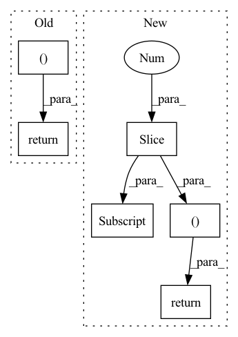

Pattern ID :1249

Before Change
block_forecasts = torch.stack(block_forecasts)
block_forecasts = block_forecasts.permute(1, 0, 2)
return forecast, block_forecasts
After Change
level = encoder_y[:, -1:].repeat(1, decoder_x_t.size(1), 1) // Level with Naive1
block_forecasts = [level]
block_backcasts = [encoder_y[:, -1:].repeat(1, encoder_y.size(1), 1)]
forecast = level
for block in self.blocks:
block_backcast, block_forecast = block(
encoder_y=residuals, encoder_x_t=encoder_x_t, decoder_x_t=decoder_x_t, x_s=x_s
)
residuals = (residuals - block_backcast) * encoder_mask
forecast = forecast + block_forecast
block_forecasts.append(block_forecast)
block_backcasts.append(block_backcast)
// (n_batch, n_t, n_outputs, n_blocks)
block_forecasts = torch.stack(block_forecasts, dim=-1)
block_backcasts = torch.stack(block_backcasts, dim=-1)
backcast = residuals
return forecast, backcast, block_forecasts, block_backcasts
In pattern: SUPERPATTERN
Frequency: 4
Non-data size: 6
Instances
Fragment ID: 3687176
Project Name: jdb78/pytorch-forecasting
Commit Name: a60fea51988c95548f47dd9fb76fa57258201160
Time: 2022-03-20
Author: beitner.jan@bcg.com
File Name: pytorch_forecasting/models/nhits/sub_modules.py
M Class Name: NHiTS
N Class Name: NHiTS
M Method Name: forward(6)
N Method Name: forward(6)
M Parent Class: nn.Module
N Parent Class: nn.Module
M File Name: pytorch_forecasting/models/nhits/sub_modules.py
N File Name: pytorch_forecasting/models/nhits/sub_modules.py
M Start Line: 343
M End Line: 363
N Start Line: 353
N End Line: 379
'>
Before Change
f3 = self.conv4(f3)
out = self.conv5(f3)
return f3, out
After Change
def forward(self, f1, f2, f3):
f3 = self.upsample(f3, f1.shape[-2:])
f2 = self.upsample(f2, f1.shape[-2:])
f1 = torch.cat([f1, f2, f3], dim=1)
f1 = self.conv1(f1)
Hf1 = self.Hattn(f1)
Wf1 = self.Wattn(f1)
f1 = self.conv2(Hf1 + Wf1)
f1 = self.conv3(f1)
f1 = self.conv4(f1)
out = self.conv5(f1)
return f1, out
'>
Fragment ID: 3687169
Project Name: plemeri/inspyrenet
Commit Name: f38e9f6e03c7521b7a8ff0f9f06bfce8c132dca1
Time: 2022-02-26
Author: taehoon1018@postech.ac.kr
File Name: lib/modules/decoder_module.py
M Class Name: PAA_d2
N Class Name: PAA_d2
M Method Name: forward(4)
N Method Name: forward(3)
M Parent Class: nn.Module
N Parent Class: nn.Module
M File Name: lib/modules/decoder_module.py
N File Name: lib/modules/decoder_module.py
M Start Line: 124
M End Line: 136
N Start Line: 131
N End Line: 146
'>
Before Change
raise RuntimeError("Unknown value for attention norm type")
context = torch.bmm(alignment.unsqueeze(1), inputs)
context = context.squeeze(1)
return context, alignment
class Postnet(nn.Module):
def __init__(self, mel_dim, num_convs=5):
After Change
raise RuntimeError("Unknown value for attention norm type")
if self.forward_attn:
// forward attention
prev_alpha = F.pad(self.alpha[:, :-1].clone(), (1, 0, 0, 0)).to(inputs.device)
self.alpha = (((1-self.u) * self.alpha.clone().to(inputs.device) + self.u * prev_alpha) + 1e-7) * alignment
alpha_norm = self.alpha / self.alpha.sum(dim=1).unsqueeze(1)
// compute context
context = torch.bmm(alpha_norm.unsqueeze(1), inputs)
context = context.squeeze(1)
return context, alpha_norm, alignment
else:
context = torch.bmm(alignment.unsqueeze(1), inputs)
context = context.squeeze(1)
return context, alignment, alignment
'>
Fragment ID: 3687170
Project Name: coqui-ai/tts
Commit Name: 961af0f5cdefbb5f267671f6847cf05659962d6c
Time: 2019-04-05
Author: egolge@mozilla.com
File Name: layers/tacotron2.py
M Class Name: Attention
N Class Name: Attention
M Method Name: forward(6)
N Method Name: forward(6)
M Parent Class: nn.Module
N Parent Class: nn.Module
M File Name: layers/tacotron2.py
N File Name: layers/tacotron2.py
M Start Line: 173
M End Line: 175
N Start Line: 193
N End Line: 208
'>
Before Change
x = self.conv4(x)
out = self.conv5(x)
return x, out
class PAA_d2(nn.Module):
def __init__(self, channel):
super(PAA_d2, self).__init__()
After Change
def forward(self, f1, f2, f3):
f1 = self.upsample(f1, f3.shape[-2:])
f2 = self.upsample(f2, f3.shape[-2:])
f3 = torch.cat([f1, f2, f3], dim=1)
f3 = self.conv1(f3)
Hf3 = self.Hattn(f3)
Wf3 = self.Wattn(f3)
f3 = self.conv2(Hf3 + Wf3)
f3 = self.conv3(f3)
f3 = self.conv4(f3)
out = self.conv5(f3)
return f3, out
class PAA_d2(nn.Module):
def __init__(self, channel):
super(PAA_d2, self).__init__()
'>
Fragment ID: 3687175
Project Name: plemeri/inspyrenet
Commit Name: c355ab0cc90c9a3d27726822c1223d2f98cd0f0c
Time: 2021-11-01
Author: taehoon1018@postech.ac.kr
File Name: lib/modules/decoder_module.py
M Class Name: PAA_d
N Class Name: PAA_d
M Method Name: forward(4)
N Method Name: forward(3)
M Parent Class: nn.Module
N Parent Class: nn.Module
M File Name: lib/modules/decoder_module.py
N File Name: lib/modules/decoder_module.py
M Start Line: 86
M End Line: 101
N Start Line: 85
N End Line: 99